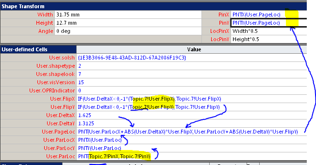
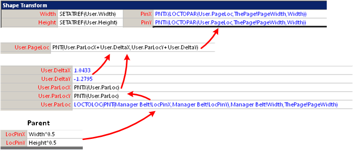
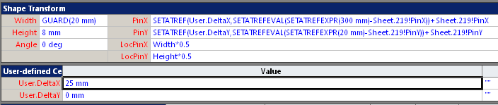
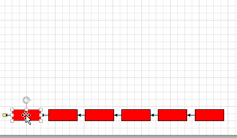

В Visio существует несколько типов диаграмм с похожим поведением при перемещении шейпов. Это древовидные диаграммы, в которых перемещение старшего по иерархии узла вызывает аналогичное перемещение подчиненных узлов. Так ведут себя Brainstorming диаграммы, организационные схемы.
Для пользователя это очень удобно и существенно ускоряет получение наиболее удобного для восприятия изображения. В Brainstorming диаграммах есть еще и дополнительный плюс - когда вершина куста пересекает центр родительского шейпа, то куст зеркально отражается. Причем это действует как по горизонтали, так и по вертикали. В организационных структурах такое отражение отсутствует, да там оно и не требуется.
Попробуем разобраться, как это сделано и как может быть повторено в своих решениях.
Brainstorming
Для начала рассмотрим шейп-лист одного из подчиненных узлов Brainstorming диаграммы.

На картинке показан фрагмент шейп-листа, в который входят все необходимые формулы. Нас интересуют несколько ячеек из User секции и результат преобразований в секции Shape Transform.
Результат последовательного вычисления нескольких формул должен попасть в PinX, PinY, что даст перемещение шейпа в нужную позицию. Старший (родительский) шейп в этом примере имеет название Topic7. Из него поступают значения координат (PinX, PinY)и признаки отражения (FlipX, FlipY). Ячейки DeltaX, DeltaY хранят величину смещения координат текущего шейпа от родительского.
Результат вычисления собирается в ячейке PageLoc ка сумма координат родительского шейпа и смещения, причем смещене может поменять знак в зависимости от прзнака отражения. Готовый результат передается в ячейки PonX, PinY.
Для лучшего понимания вычислений формулы на рисунке показаны в несколько упрощенном виде. На самом деле ParLoc вычисляется по формуле
LOCTOLOC(PNT(Topic.7!LocPinX,Topic.7!LocPinY),Topic.7!Width,ThePage!PageWidth)
вместо
PNT(Topic.7! PinX,Topic.7! PinY)
То есть вместо того, чтобы просто взять координаты родительского шейпа относительно страницы ихPinX, PinY, их пересчитывают из локальных координат центра шейпа с помощью функции LOCTOLOC. Цель такого маневра непонятна, потому как результат получается тем же самым.
Аналогичная подмена работает на выходе. Реально используется формула
PNTX(LOCTOPAR(User.PageLoc,ThePage!PageWidth,Width))
вместо
PNTX(User.PageLoc).
Вмешательство AddOn.
Описанная выше конструкция заставит подчиненный шейп следовать за родительским на заданном расстоянии. Но это только часть нужного функционала. Еще требуется изменять величину смещения путем перемещения только подчиненного шейпа. Вот этого в формулах нет. Вместо формул на данном этапе работает AddOn Brainstorming диаграммы, который вычисляет значения DeltaX, DeltaY при перемещении подчиненного шейпа и заносит результат в ячейки. Помимо этого он же обновляет формулы в PinX, PinY и ParLoc, которые могут разрушиться при перемещении шейпа или изменении связи между шейпами пользователем.Значит при необходимости создать свое решение с аналогичным поведением шейпов придется также задействовать макрос или AddOn с аналогичными функциями.
Оргдиаграмма
Если посмотреть реализацию такого же механизма перемещения в другом дополнении - организационная диаграмма, то мы увидим аналогичные формулы и даже ячейки с теми же названиями. Только немного попроще, потому как отражение здесь в принципе не нужно, поэтому пара ячеек отсутствует.

Другие варианты реализации
Теперь настало время вспомнить о функции SETATREF. Судя по примеру из справки, достаточно вот такой формулы, чтобы решить все проблемы.
PinX =SETATREF(User.DeltaX, SETATREFEVAL(SETATREFEXPR() - ParentShape!PinX)) + ParentShape!PinX
Даже Delta будет формироваться автоматически без программного компонента. Единственное, что нужно сделать - в какой-то момент подставить имя родительского шейпа вместо ParentShape.
Но возникает вопрос, почему же такой путь не использован ни в Brainstorming, ни в оргдиаграмме. Попробуем потестировать. Зарядим несколько шейпов такими формулами (подставляя очередной родительский шейп) и будем двинать как отдельные шейпы, так и несколько сразу.

Вот и обнаруживается недостаток.

Перемещение отдельных шейпов проходит нормально, а при попытке группового перемещения диаграмма разлетается. Хвост сильно заносит. Такое впечатление, что к перемещению подчиненного шейпа добавляются перемещения всех его предшественников. В общем-то, это даже не ошибка. Это просто расхождение желаемого поведения с тем, которое вызвано формулами.
И избежать такой неприятной особенности довольно трудно. При программном расчете дельт не составит труда выявить факт множественного селектирования и изменить алгоритм.Но на уровне шейп-листа это невозможно.
Но это еще не все неприятности. Вспомните, что при смене родителя придется программно обновлять формулу в PinX. Примерно так:
.Cells("PinX").FormulaU = "SETATREF(User.DeltaX, SETATREFEVAL(SETATREFEXPR() - " & .Connects(1).ToSheet.NameID & "!PinX)) + " & .Connects(1).ToSheet.NameID & "!PinX"
В этом примере имя родительского шейпа берется из соединения, но это не важно, только для примера. Важно другое - если в ячейке уже была примерно такая формула, то после обновления формула разрастается. Вместо
=SETATREF(User.DeltaX,SETATREFEVAL(SETATREFEXPR(405 mm)-Sheet.237!PinX))+Sheet.237!PinX
мы увидим
=SETATREF(User.DeltaX,SETATREFEVAL(SETATREFEXPR(SETATREF(User.DeltaX,SETATREFEVAL(SETATREFEXPR()-Sheet.237!PinX))+Sheet.237!PinX)-Sheet.237!PinX))+Sheet.237!PinX
Такое впечатление, что SETATREFEXPR вместо значения целиком вставил ранее существовавшую формулу. Естественно, при этом шейп улетел далеко от прежней позиции.
Конечно, это лечится. Можно сначала обнулить формулу, например, записать .Cells("PinX").FormulaU = "", а только потом передавать настоящую формулу. Можно хранить ID шейпа родителя в отдельной ячейке, а в ячейке PinX только ссылаться на нее, чтобы формула в PinX никогда не изменялась. Но неприятен сам факт неадекватного поведения.
Я уже не помню, где я видел следующую фразу: "SETATREF хорошая функция, но если у вас есть возможность не применять ее, то не применяйте ее никогда". Я все более склонен согласиться с такой оценкой.
Вывод
Таким образом мы рассмотрели метод привязки потомков к родителю, используемый в распространенных приложениях Visio. Выяснили, что в разных приложениях используется очень похожий механизм взаимодействия формул, обеспечивающих такую связь. И убедились, что программный расчета смещений потомков более надежен по сравнению с использованием SETATREF.